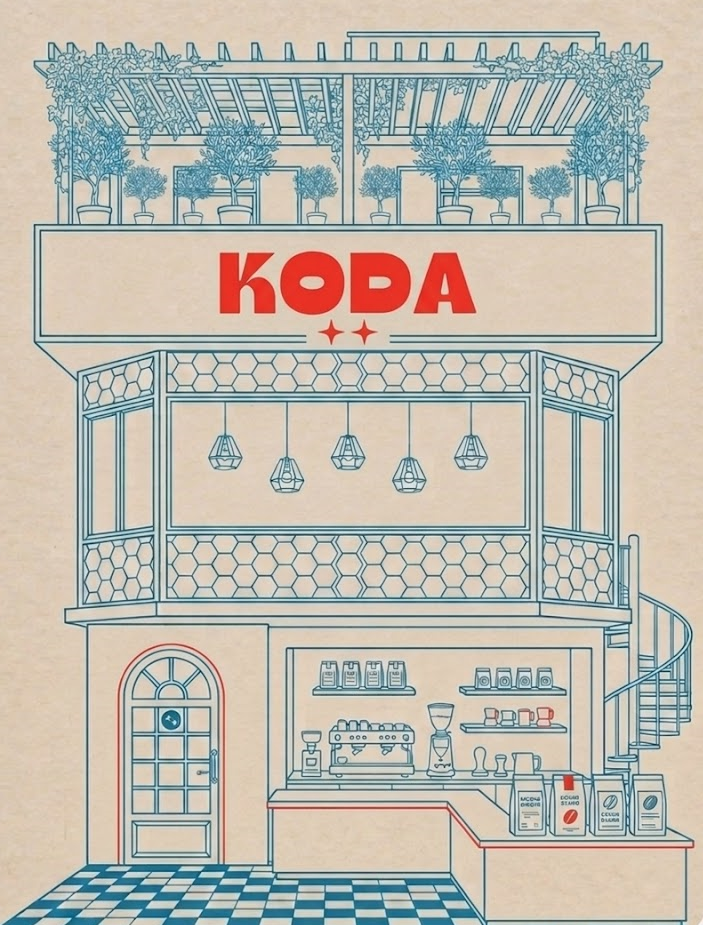

Koda não é só um café. É um lugar que nasceu da ideia de que tomar um bom café pode ser uma experiência — não só um hábito.
O nome vem do pequeno Koda, de Irmãos Urso, porque assim como ele, a gente acredita que as melhores coisas da vida acontecem quando você para, respira e aproveita o momento.
Aqui você não vai encontrar o óbvio. Koda é curioso, autêntico, impossível de ignorar. E é exatamente assim que a gente pensa nossos drinks. Do Thai Tea ao Espresso Tonic, cada um tem personalidade própria.
